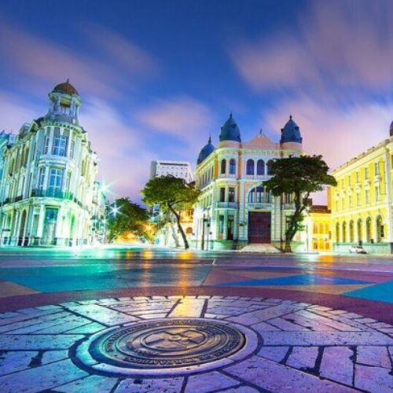

Você conhece o Marco zero no recife?
O Marco Zero no Recife Antigo é um dos pontos turísticos mais importantes para quem deseja conhecer a capital de Pernambuco. Isso porque é um local de importância histórica que conta o nascimento da cidade e possui forte referência cultural.
A praça do Marco Zero:
A praça do marco zero, é um dos pontos mais icônicos do local, sempre chamando a atenção pela suas cores e beleza estonteante!
Mais um pouco da praça do Marco Zero:

Um lugar que não passa despercebido, e que não pode faltar no etinerário da sua viagem!